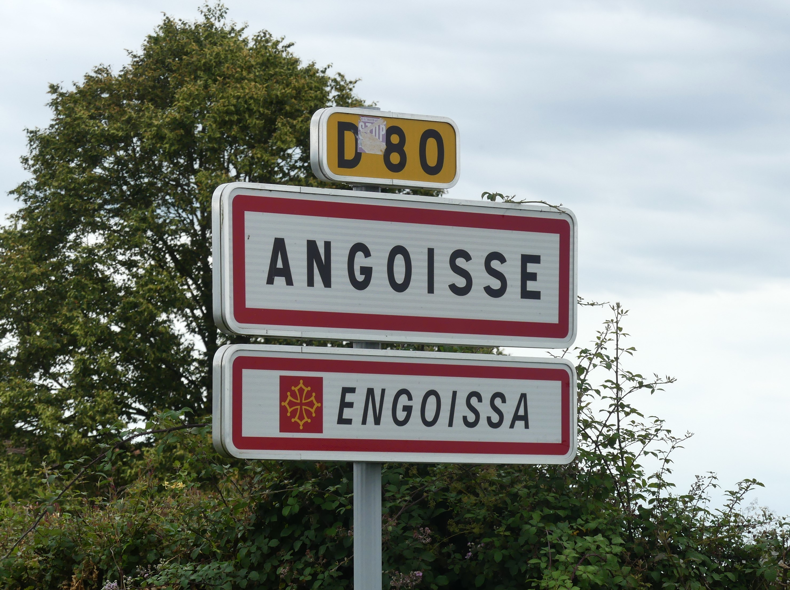
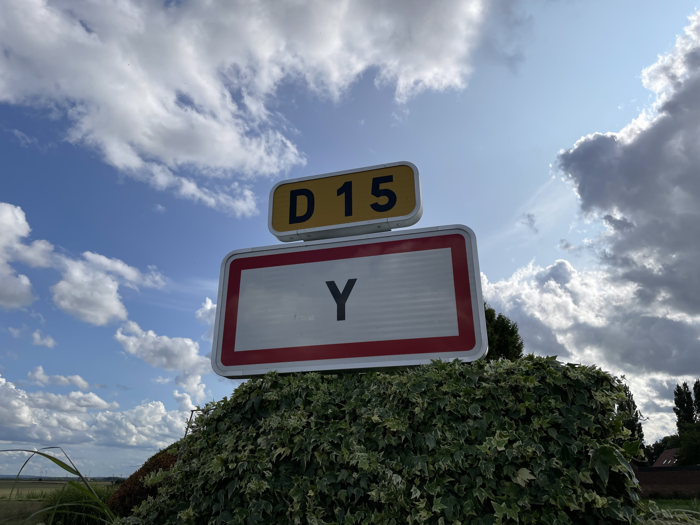
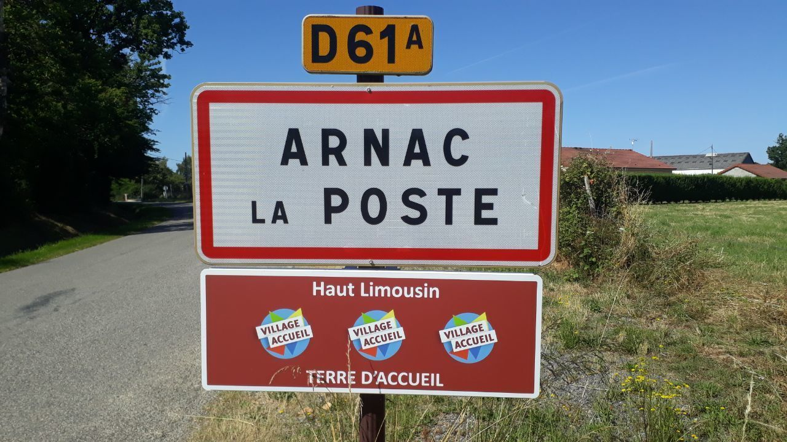

| Deux-Verges |
|
Crandellois |
55 |
Situé à 959m d’altitude, Deux-Verges (15110) est une commune située dans le département du Cantal. Cette commune fait partie des moins denses de France avec moins de 40 habitations et environ 50 habitants. Au delà de sa place dans notre classement des noms de villages insolites, vous pouvez visiter l’église de Saint-Médard à Deux-Verges.
|
 |
|
| Hébécrevon |
|
Hébécrevonnais |
1134 |
Encore une ancienne commune de France qui eut porté un des noms de villages insolites. Fusionnée en 2016 avec la commune de Thèreval (50239). En patois normand, Hébécrevon signifie “le chevron d’Hébert”. Le chevron n’est ni plus ni moins qu’une pièce de bois (une poutre) clef au fonctionnement d’un petit pont nécessaire à la traversée d’un gué.
|
 |
|
| Angoisse |
|
Angoissais |
598 |
Qu’il y a-t-il donc de si angoissant dans ce village de la Dordogne, en Nouvelle-Aquitaine pour qu’on l’appelle ainsi ?
Il n’est pas vraiment conseillé de se fier aux noms insolites des villages. A « Angoisse », on trouve en effet des lieux
plutôt sympathiques et accueillants contrairement à ce que l’on peut penser. Pas de monstres ni de phénomènes
paranormaux, mais plutôt des endroits chaleureux et apaisants aux alentours, dont le Parc naturel du Périgord.
|
 |
|
| Y |
|
Yssois ou Ypsiloniens |
87 |
Vous pensez peut-être que l’on a oublié la suite ? Et pourtant, cette commune du département de la somme s’appelle bien
« Y » et rien de plus. Vous pensez sans doute que c’est plutôt insignifiant comme nom, mais en tout cas, il s’agit du
plus court de France. Pour votre information, on appelle les habitants de ce village à l’appellation originale les…
Ypsiloniens.
|
 |
|
| Vatan |
|
Vatanais |
1994 |
Il n’y a rien de plus repoussant que de porter le nom « Vatan ». Et pourtant, c’est bien
l’appellation choisie pour un village dans l’Indre. Bien que les touristes se font prier de partir en lisant la
plaque à l’entrée du village, cela ne les empêche pas pour autant, par curiosité, d’y entrer. Toutefois, certains
pourraient prendre le message au sérieux et passer leur chemin, en rejoignant plutôt la ville de Bourges qui se
trouve à côté.
|
 |
|
| Arnac-la-Poste |
|
Arnacois |
902 |
On n’arnaque personne et surtout pas la Poste à Arnarc-la-Poste (87160) dans la Haute-Vienne. Elle fait aussi partie des
communes au noms de villages insolites qui se regroupent dans l’association des communes aux noms burlesques. Bonjour
aux Arnacois et aux Arnacoises.
|
 |
|